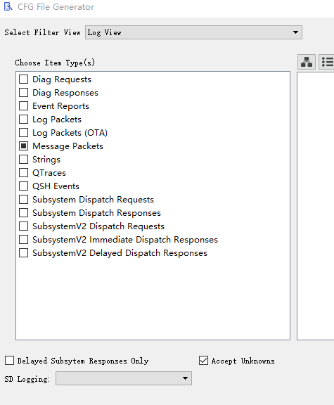
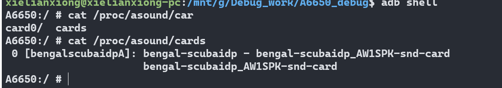

概要¶
本来高通主mic 是mic1, 副mic是mic3, 耳机mic是mic2, 当时由于结构原因, mic1 放到了副mic位置,mic3 放到了主mic位置
所以软件需要把通话的主mic路由到mic3
原理图¶

调试¶
调试命令
adb shell "tinymix 'TX DEC1 MUX' 'SWR_MIC'"
adb shell "tinymix 'TX SMIC MUX1' 'SWR_MIC1'"
adb shell "tinymix 'TX_AIF1_CAP Mixer DEC1' '1'"
adb shell "tinymix 'DEC0_BCS Switch' '1'"
adb shell "tinymix 'ADC2_MIXER Switch' '1'"
adb shell "tinymix 'ADC2 MUX' 'INP3'"
adb shell "tinymix 'MultiMedia1 Mixer TX_CDC_DMA_TX_3' '1'"
adb shell "tinymix 'TX_CDC_DMA_TX_3 Channels' 'Two'"
tinycap /data/rec_all.wav -c 2
tinyplay /data/rec_all.wav
查看系统声卡,cat /proc/asound/cards

解决方法¶
硬件接线图,amic1 接项目机器背部, amic3 接机器底部
所以只要更换amic1 amic3的物理通道就可以
<path name="amic3">
<ctl name="TX DEC2 MUX" value="SWR_MIC" />
<ctl name="TX SMIC MUX2" value="SWR_MIC0" />
<ctl name="TX_CDC_DMA_TX_3 Channels" value="One" />
<ctl name="TX_AIF1_CAP Mixer DEC2" value="1" />
<ctl name="ADC1_MIXER Switch" value="1" />
</path>
<path name="amic1">
<ctl name="TX DEC1 MUX" value="SWR_MIC" />
<ctl name="TX SMIC MUX1" value="SWR_MIC1" />
<ctl name="TX_CDC_DMA_TX_3 Channels" value="One" />
<ctl name="TX_AIF1_CAP Mixer DEC1" value="1" />
<ctl name="DEC0_BCS Switch" value="1" />
<ctl name="ADC2_MIXER Switch" value="1" />
<ctl name="ADC2 MUX" value="INP3" />
</path>